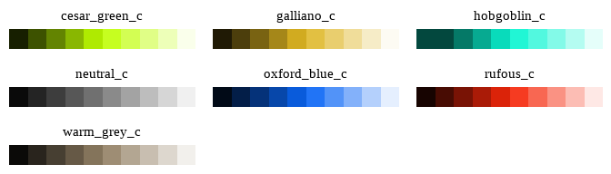
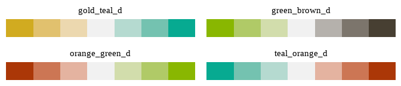

The seizer package is designed to make data visualisation quick, easy and consistent for all Cesar staff. The package contains a few functions which fit in the general ggplot2 syntax, and by using them you can make sure your figures will always look the same and adhere to the Cesar Australia style guide.
If you are new to ggplot2, or just need a refresher, have a read through the ggplot2 Tutorial under the articles tab.
Installation
seizer can be installed by running the following code:
You may be asked to update some packages, if the existing versions installed on your computer are old. Updating may cause compatibility issues with old code, so I suggest skipping updates on the first install attempt. If the package works fine, then there’s nothing to worry about.
Using seizer
seizer is built to work neatly with ggplot2. If you are familiar with ggplot2 syntax, using this package will be very simple. The idea is you build your figures as you usually would in ggplot2. Then, you can use the supplied functions in seizer to transform your figures into a consistent theme.
Here is a ggplot2 figure, which includes pretty much everything you might include in a figure: aesthetics, mappings, titles, subtitles, legends, facets, etc. This plot is rendered with the default ggplot2 settings:
p <- iris %>%
ggplot(aes(x = Sepal.Length, y = Petal.Length, colour = Sepal.Width, fill = Species)) + geom_point() + geom_smooth(method = "lm") + facet_wrap(~Species, scales = "free") + labs(title = "This is a title", subtitle = "This is a subtitle")
p
#> `geom_smooth()` using formula = 'y ~ x'
Now, you just add the theme_cesar() function to transform your plot, using theme elements designed to fit with data visualisation principles and the Cesar Australia style guide:
p <-
p + theme_cesar()
p
#> `geom_smooth()` using formula = 'y ~ x'
Notice that while the “static” plot elements have changes (colours, linewidths and fonts of labels, gridlines, backgrounds, etc.), the colours that are actually mapped onto the data using the ggplot2::aes() function have remained unchanged at their default values. You might recall that in order to change these in the ggplot2 syntax you need to use the scale_*() family of functions. seizer comes with its own family of scale_*_cesar_*() functions, which allow you to map Cesar Australia colour palettes onto your figures:
p <-
iris %>% ggplot(aes(x = Sepal.Length, y = Petal.Length, colour = Sepal.Width, fill = Species)) + geom_point() + geom_smooth(colour = ancient_lavastone, method = "lm") + facet_wrap(~Species, scales = "free") + labs(title = "This is a title", subtitle = "This is a subtitle") +
theme_cesar() + scale_colour_cesar_c(palette = "galliano_c") + scale_fill_cesar_d()
p
#> `geom_smooth()` using formula = 'y ~ x'
The next section contains more information about these colour palettes and how to use them.
The final function you will use is cesar_save(). This is a wrapper function around the ggplot2::ggsave() function which you may have come across, allowing the user to save a plot by assigining values to width, height, dpi, etc. However, this function comes with several pre-determined presets to generate your outputs. These match the size and resolution of the saved plot to the destination format. There are five presets: twitter, web, linkedin, facebook and print. If no preset is specified, the function reverts to the user-provided values or, if none provided, to the ggplot2::ggsave() default values. There is also an optional argument, logo, which can be used to add a Cesar logo at the top right of the plot by setting logo = TRUE. This is turned off by default. You can also specify a destination pathway using the path argument - by default, the plot is saved to your working directory. Finally, the export defaults to .png format if an accepted format is not specified in the filename (e.g., “plot.jpeg”).
For example, if we wanted to save our plot in a web format (72dpi) with a logo, we would run the following code:
cesar_save(filename = "cesar_web.png", preset = "web", logo = T)This automatically exports the last rendered plot into the working directory with the selected presets.
Cesar Australia colour palettes
Finally, seizer contains a variety of colour palettes which can be used for your data vis. These are derived from the colours in the Cesar Australia style guide, with slight modifications to hue or brightness values to make them more suitable for data visualisation. As explained above, these can be easily plugged into ggplot2 objects using the scale_*_cesar_*() family of functions. However, you can also access the palettes directly using cesar_palettes() to see the available palettes or pull individual colours or palettes out - for instance if you want to use them for a base R figure.
Discrete palettes
seizer includes two discrete palettes, which are suitable for mapping onto unordered categorical variables:
These include 7 colours - if you have more groups in your data, You can use a helper function (see blow) to either interpolate additional intermediate colours or to discretise a continuous colour scale (either sequential or diverging). The latter option may be useful for ordered categorical variables, but note that colours may end up being too similar to discern between groups.
Sequential palettes
seizer includes seven sequential palettes, which are suitable for mapping onto continuous variables. These are all based on “primary” cesar colours, and vary in brightness values around a single base hue. The seven palettes are:

Diverging palettes
seizer includes four diverging palettes, which are suitable for mapping onto continuous variables. These are especially useful for visualising data that have a distinct, meaningful midpoint - for example, negative vs. positive values, which are centered around zero. Alternatively, any biologically meaningful midpoint which needs to be emphasised. The four palettes are:

Please note that for diverging palettes especially, care should be given to use palettes that are colour blind friendly. While all of these palettes are discernible to people with either protanopia or deuteranopia-type colour blindness, gold_teal_d and teal_orange_d may be the best ones to use.
Helper functions
A helper function is included with seizer to generate colour palettes of a user-defined length. This is cesar_rampr(), which accepts as arguments a number of colours requested, a colour palette (use names(cesar_palettes) to view all available palettes), an alpha value for transparency, and a logical argument to reverse the palette, if requested. It then generates a vector of colours, which can be used manually in plotting. If a discrete palette is selected, the function simply returns the colours in the palette in the same order. If n > 7 the function will perform linear interpolation to find intermediate colours. If a continuous palette is selected, the function performs linear interpolation to discretise the palette and return several discrete values of length n.
new_pal <- cesar_rampr(n = 15, pal_name = "oxford_blue_c", alpha = .7)
new_pal2 <- cesar_rampr(n = 4, pal_name = "cesar_light", reverse = T)
new_pal3 <- cesar_rampr(n = 10, pal_name = "cesar")
plot(as_palette(list(new_pal, new_pal2, new_pal3)))Finally, two additional helper functions are includes, cesar_pal() and cesar_gradient_n_pal(). These are a bit more complicated, and serve as wrappers around cesar_rampr() to facilitate its use in scale_*_cesar_*() functions. In other words - you can safely ignore these, but feel free to play around with them if you’d like.